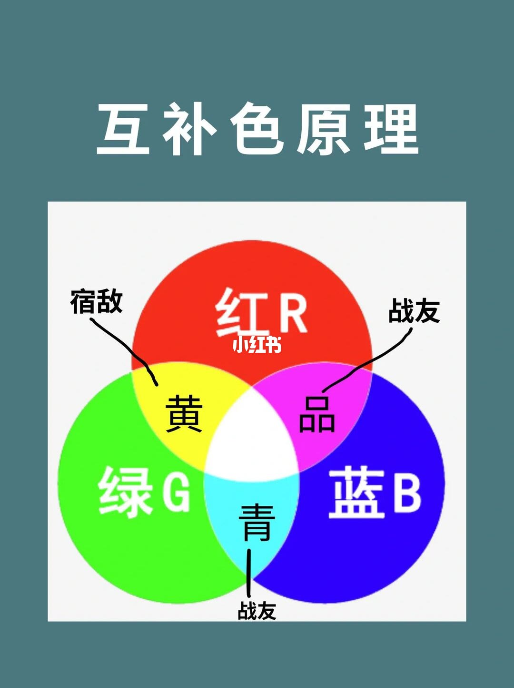
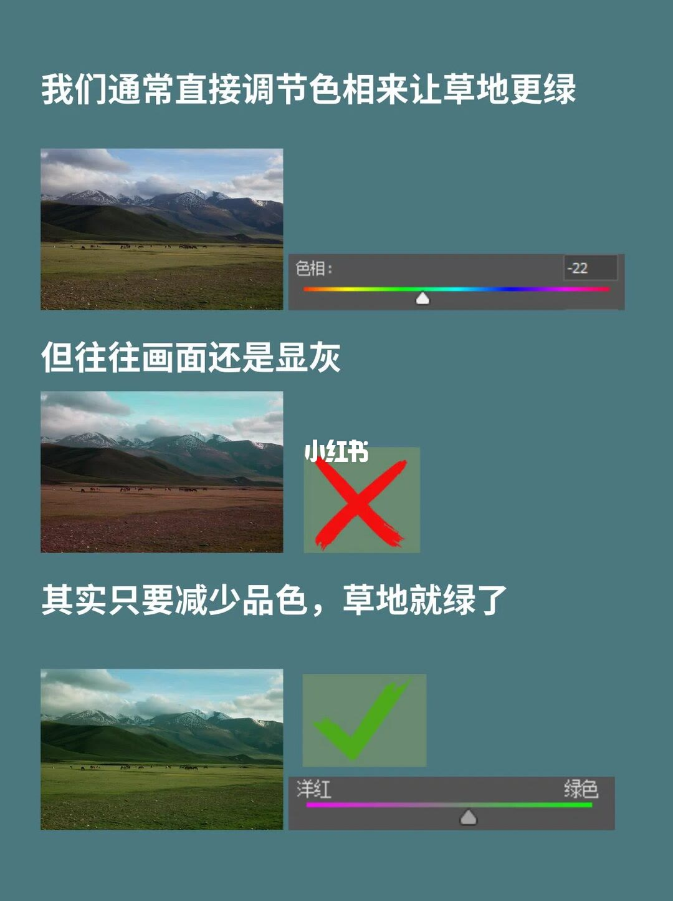
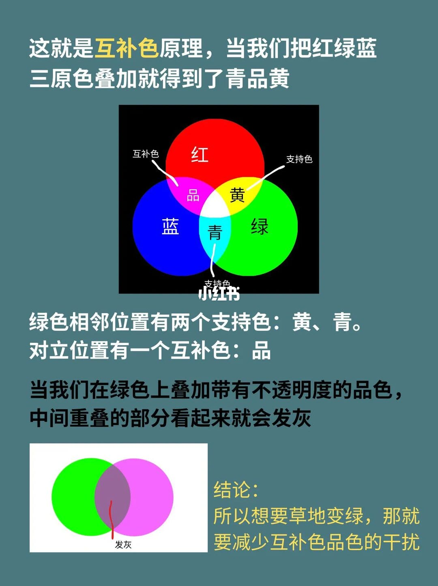
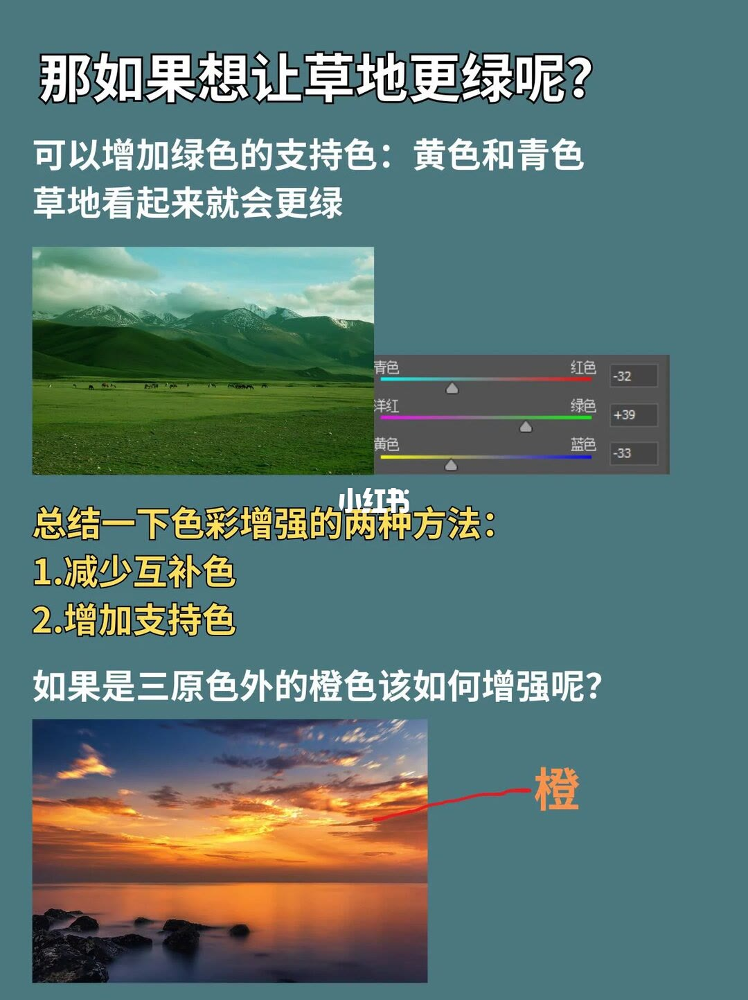
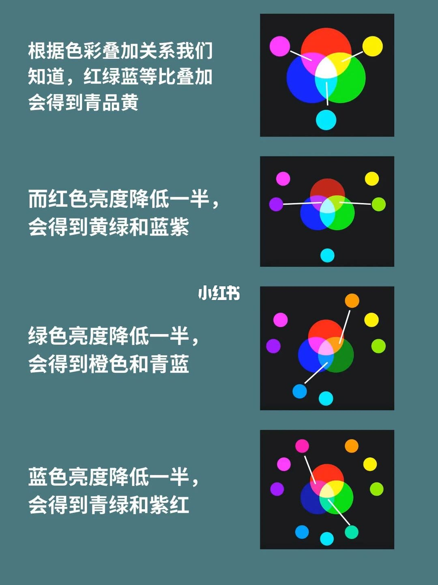
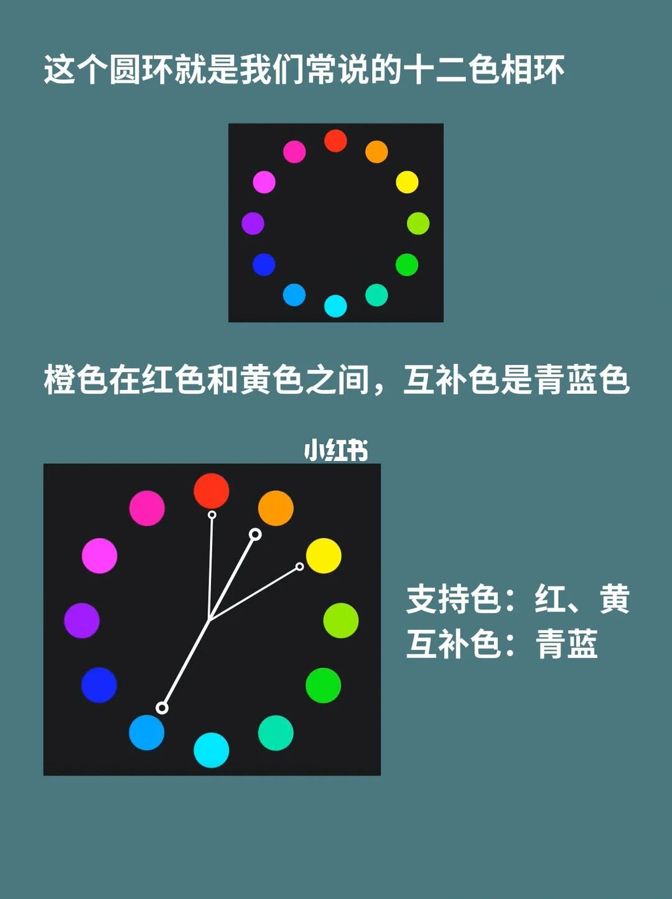
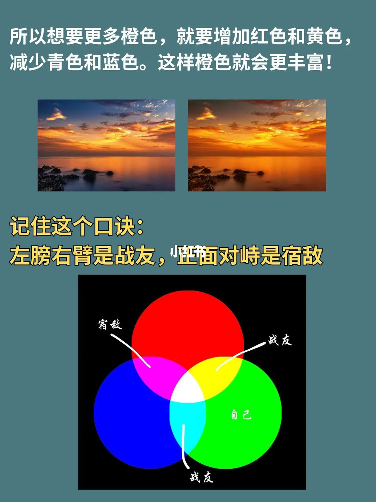

图文实录 · 小红书 · 拍摄小龙
互补色调色原理，如何增强画面中的颜色
增强颜色靠减互补色、加相邻的支持色。草地例里，色相拧到 -22 画面仍显灰；减品色草地才绿，再加黄和青会更绿。橙色则加红和黄、减青和蓝。
1/7
互补色原理：黄是宿敌，品和青是战友
青灰底，白字标题「互补色原理」。中间是红、绿、蓝三圆叠加：上圆标「红 R」，左下「绿 G」，右下「蓝 B」。红加绿的重叠处标「黄」，红加蓝标「品」，绿加蓝标「青」，三色交会处是白。手绘线把「宿敌」指到黄，「战友」分别指到品和青。这一页没有写「自己」是哪一色，也没有滑块。

2/7
拧色相到 -22 仍显灰，减品色草地才绿
上句：「我们通常直接调节色相来让草地更绿」。旁边是开阔草地和远山，色相滑杆标「色相：」，读数是 -22，指针偏在黄绿一侧。下一句：「但往往画面还是显灰」，同一场景打了红叉。下句：「其实只要减少品色，草地就绿了」，草地明显更绿，打了绿勾。旁边是洋红到绿色的滑杆，指针靠向绿色。这根滑杆上看不到数字。

3/7
绿的支持色是黄和青，互补色是品
开头：「这就是互补色原理，当我们把红绿蓝三原色叠加就得到了青品黄」，「互补色」三字是黄的。图仍是红绿蓝三圆。两条线把黄、青标成「支持色」，一条线把品标成「互补色」。正文：「绿色相邻位置有两个支持色：黄、青。对立位置有一个互补色：品。当我们在绿色上叠加带有不透明度的品色，中间重叠的部分看起来就会发灰。」下面两个圆，绿和品叠在一起，重叠处用红线标「发灰」。黄字结论：「所以想要草地变绿，那就要减少互补色品色的干扰」。没有数值。

4/7
再加黄和青：这一页的三根滑杆是 -32、+39、-33
问：「那如果想让草地更绿呢？」答：「可以增加绿色的支持色：黄色和青色，草地看起来就会更绿。」旁边仍是那张草地。面板上三根滑杆，图上没有软件名：青色—红色为 -32，指针靠青；洋红—绿色为 +39，指针靠绿；黄色—蓝色为 -33，指针靠黄。黄字总结：「总结一下色彩增强的两种方法：1.减少互补色 2.增加支持色」。下面问：「如果是三原色外的橙色该如何增强呢？」一张海边落日，箭头指向橙色天空，旁注「橙」。

5/7
亮度减半之后，二次色会往哪边偏
四行字配四张叠加图，都是示意，没有滑块。第一行：「根据色彩叠加关系我们知道，红绿蓝等比叠加会得到青品黄」，红加绿指向黄，红加蓝指向品，绿加蓝指向青。第二行：「而红色亮度降低一半，会得到黄绿和蓝紫」，红圆变暗，红加绿指向黄绿，红加蓝指向蓝紫。第三行：「绿色亮度降低一半，会得到橙色和青蓝」，绿圆变暗，红加绿指向橙，绿加蓝指向青蓝。第四行：「蓝色亮度降低一半，会得到青绿和紫红」，蓝圆变暗，绿加蓝指向青绿，红加蓝指向紫红。「一半」是这页的说法，图上没有对应的百分比滑杆。

6/7
橙色夹在红和黄之间，互补色是青蓝
上句：「这个圆环就是我们常说的十二色相环」，黑底上一圈十二个色点，红在顶部附近。中句：「橙色在红色和黄色之间，互补色是青蓝色」。下面放大的色环上，线指向红和黄，对面指向青蓝。右侧两行：「支持色：红、黄」「互补色：青蓝」。没有照片，没有数值。

7/7
橙色：加红和黄，减青和蓝
上句：「所以想要更多橙色，就要增加红色和黄色，减少青色和蓝色。这样橙色就会更丰富！」同一处海边落日并排两张，右边的天空和倒影更橙。黄字口诀：「记住这个口诀：左膀右臂是战友，正面对峙是宿敌」。底部三圆里，「自己」写在绿圆上，两条「战友」指向黄和青，「宿敌」指向品。这一页没有滑块读数。

汇总
先认对面，再减它、加邻居
结论：这篇把增强颜色拆成两步，第 4 页写成「减少互补色」和「增加支持色」。草地先减品（第 2、3 页），再加黄和青（第 4 页）；橙色加红和黄、减青和蓝（第 6、7 页）。第 7 页的口诀是：左膀右臂是战友，正面对峙是宿敌。
支撑：第 2 页色相读数 -22，品绿滑杆无数字；第 4 页三根滑杆为 -32、+39、-33。第 5 页用「亮度降低一半」说明绿变暗后会出现橙色和青蓝。第 1 页只标了宿敌和战友，第 7 页才把「自己」写在绿色上。
边界：文案问的是怎样调出干净和高级感，七页没有单独讲这一步。第 4 页的三个读数只出现在这一张草地示例上。图上没有软件名。「一半」不是滑杆读数。第 1 页没有写明宿敌、战友是相对哪一色。